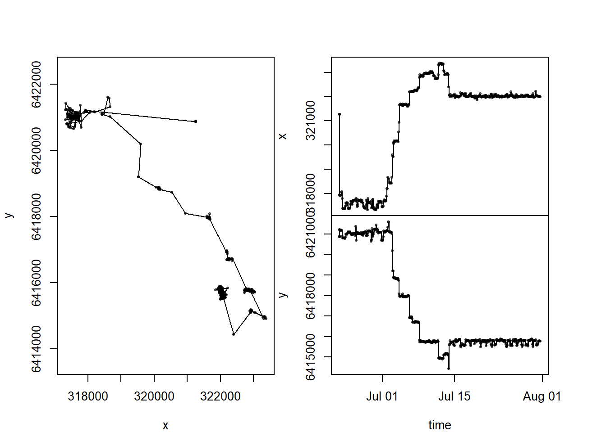
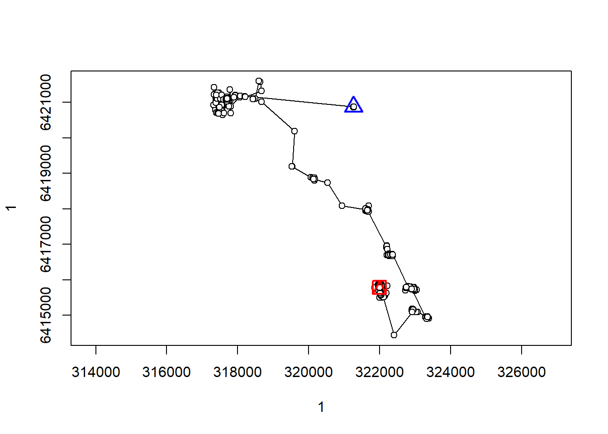
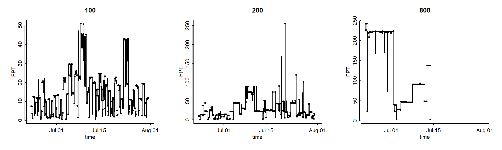
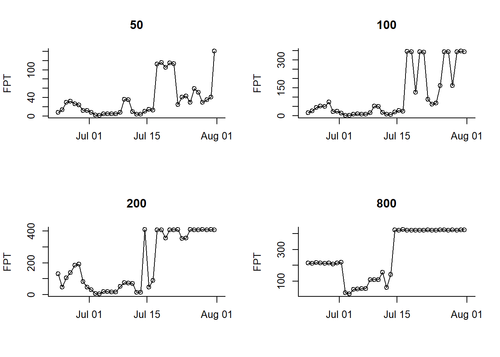

getwd()[1] "C:/Users/egurarie/teaching/movementbook/SpatialAndMovementEcologyCourse/part4_movement_models"[1] "data_ag"getwd()[1] "C:/Users/egurarie/teaching/movementbook/SpatialAndMovementEcologyCourse/part4_movement_models"[1] "data_ag"Guarani <- subset(data_ag, name == "Guarani")require(adehabitatLT)Loading required package: adehabitatLTLoading required package: spLoading required package: ade4Loading required package: adehabitatMARegistered S3 methods overwritten by 'adehabitatMA':
method from
print.SpatialPixelsDataFrame sp
print.SpatialPixels sp Loading required package: magrittrLoading required package: sfLinking to GEOS 3.13.1, GDAL 3.11.0, PROJ 9.6.0; sf_use_s2() is TRUEGuarani.sf <- Guarani %>% st_as_sf(coords = c("long", "lat"), crs = 4326) %>%
st_transform(32722)
Guarani.xy <- Guarani.sf %>% st_coordinates
Guarani.sf$X <- Guarani.xy[,1]
Guarani.sf$Y <- Guarani.xy[,2]
require(marcher)Loading required package: marcherwith(Guarani.sf, scan_track(x = X, y = Y, time = date))
[1] 6058.765[1] 7159.668
radii <- c(100,200,800)
G.fpt <- fpt(Guarani.traj, radii, units = "hours")
par(mfrow = c(1,3), mar = c(4,4,3,2), bty = "l", mgp = c(1.5,.5,.25), tck = 0.01)
plot.fpt(G.fpt, radii, xlab = "time", cex = 0.5)
Lots to discuss … but in the meantime, try some smoothing:
[1] 1.2166667 0.6500000 0.8833333 1.3166667 47.3000000 0.8500000
[7] 120.8000000 119.5333333 119.7333333 122.1500000 118.2000000 119.6666667
[13] 120.2500000 119.9833333 119.9333333 120.0000000 120.0666667 120.0000000
[19] 119.7333333 120.2666667 120.9000000 119.1000000 119.5833333 122.9166667
[25] 117.5000000 120.0000000 119.6166667 120.0666667 120.3166667 119.6833333
[31] 120.6333333 119.3666667 120.3166667 122.5000000 117.1833333 120.3166667
[37] 120.0000000 120.0166667 119.9833333 119.7333333 120.2666667 120.0833333
[43] 119.8500000 119.6666667 120.4000000 120.4166667 119.2833333 120.1500000
[49] 119.7833333 120.3666667 119.6666667 120.3333333 120.0000000 121.3166667
[55] 118.7833333 119.8166667 120.0833333 120.0166667 119.5833333 120.0000000
[61] 120.1000000 119.9833333 120.0666667 119.8666667 120.3833333 120.0000000
[67] 119.6666667 120.6500000 119.6833333 122.0000000 117.7500000 123.7500000
[73] 116.1833333 120.3333333 119.5833333 120.4166667 119.9833333 119.6000000
[79] 121.4166667 118.7666667 120.2166667 119.6666667 120.1000000 120.6500000
[85] 119.2833333 120.3166667 119.7666667 120.2166667 120.0000000 120.8500000
[91] 119.2166667 119.9333333 119.6000000 120.1500000 120.0833333 119.8500000
[97] 120.2833333 119.6500000 120.3833333 119.9000000 119.8333333 121.7666667
[103] 118.1000000 120.4000000 119.7500000 120.6666667 120.0833333 119.0833333
[109] 120.1666667 120.6166667 119.4833333 119.7500000 120.0833333 120.3166667
[115] 119.5833333 120.4166667 119.7333333 122.6833333 117.5833333 121.0000000
[121] 118.6166667 120.3833333 119.6000000 120.4000000 119.6333333 120.3666667
[127] 119.6000000 123.9000000 116.0833333 120.1833333 121.1500000 118.6833333
[133] 120.0833333 120.3166667 119.6333333 120.0500000 120.3166667 119.5833333
[139] 120.0833333 120.0833333 120.5166667 119.3500000 119.9833333 120.2833333
[145] 120.1000000 120.2833333 119.5000000 120.7333333 119.2500000 120.2500000
[151] 120.9166667 118.6833333 121.4000000 118.6833333 120.2333333 120.4000000
[157] 119.3500000 120.3333333 119.6500000 120.3500000 120.5000000 120.4166667
[163] 118.6666667 120.0666667 120.0166667 120.8500000 119.3333333 119.7833333
[169] 120.8666667 119.5000000 119.6166667 120.0666667 119.9833333 120.0666667
[175] 120.2333333 119.9500000 119.7666667 120.3166667 119.6000000 120.2666667
[181] 119.7333333 120.4166667 119.8166667 119.8500000 120.2833333 119.7166667
[187] 120.2000000 119.7500000 120.0333333 120.0166667 121.8166667 118.2666667
[193] 121.7333333 118.2333333 119.9666667 120.1833333 120.1166667 120.5000000
[199] 119.1833333 120.3333333 119.9833333 120.0000000 119.6833333 120.3166667
[205] 120.0000000 119.6833333 120.0500000 119.8500000 120.9166667 119.0833333
[211] 120.1333333 119.9333333 120.3500000 119.6666667 121.7333333 118.5333333
[217] 120.3500000 119.7500000 119.9666667 119.7666667 120.3333333 119.6500000
[223] 120.0000000 119.9833333 120.7333333 119.5666667 119.9666667 119.7666667
[229] 120.1000000 120.1333333 119.6500000 120.1333333 120.0666667 119.9500000
[235] 120.2333333 119.6166667 120.1000000 122.2500000 117.6833333 121.3166667
[241] 119.0000000 120.5000000 119.9166667 119.5833333 120.3166667 123.0166667
[247] 116.6666667 119.7000000 120.7166667 119.1833333 120.0666667 120.3333333
[253] 119.6666667 120.0166667 119.9333333 120.1166667 122.2666667 118.0166667
[259] 119.5833333 120.0333333 120.2000000 120.1000000 120.0000000 119.9000000
[265] 120.6500000 119.3833333 119.8666667 120.0166667 120.5500000 119.6333333
[271] 121.4833333 118.5833333 119.7666667 120.0833333 119.7666667 122.2000000
[277] 117.9000000 120.5666667 120.2166667 119.5166667 119.9833333 120.0000000
[283] 121.0000000 118.6666667 120.7500000 119.2166667 120.2166667 119.7333333
[289] 120.3500000 119.8833333 121.1000000 118.9333333 123.0833333 116.7833333
[295] 119.9833333 120.2666667 119.8000000 119.8333333 122.3166667 117.8166667
[301] 120.2666667 120.5000000 119.0833333 120.4166667 120.5166667 119.9833333
[307] 119.1000000 120.0500000 120.0333333 121.2333333 118.7833333 120.3000000
[313] 119.9833333 119.6333333 120.3833333 119.6000000 120.1500000 121.2500000
[319] 118.6500000 120.3500000 119.6500000 120.1000000 121.2500000 119.0000000
[325] 119.7500000 120.0166667 119.9833333 120.2333333 121.2000000 120.3166667
[331] 119.3166667 118.7666667 122.8333333 117.1833333 120.9000000 119.5000000
[337] 120.0000000 120.0000000 119.7500000 119.9333333 120.0000000 121.1166667
[343] 118.8000000 120.0500000 119.9666667 121.2000000 119.0000000 120.1833333
[349] 119.7000000 120.3000000 119.7000000 120.1500000 119.7500000 120.8166667
[355] 119.5833333 119.7666667 119.9166667 120.1500000 119.7833333 120.2833333
[361] 119.8500000 120.7500000 120.0000000 119.5000000 119.6833333 120.0166667
[367] 120.0666667 120.6666667 119.3000000 119.8500000 120.4333333 120.4833333
[373] 119.5000000 119.7000000 119.9666667 120.1666667 120.1666667 119.6833333
[379] 119.9833333 119.9166667 120.4166667 120.0000000 121.8166667 118.5833333
[385] 119.6000000 119.6666667 240.0000000 120.7500000 119.3333333 120.0166667
[391] 119.9333333 120.7166667 120.0833333 119.1000000 121.2166667 119.1833333
[397] 120.0000000 120.0000000 119.6833333 120.0000000 120.1833333 119.8166667
[403] 120.8333333 119.9000000 120.4833333 118.7833333 120.0000000 120.8166667
[409] 119.2500000 120.4833333 119.7666667 119.6666667 119.9833333 121.7166667
[415] 118.6333333 120.5000000 119.5166667 119.6666667 120.3333333 120.0833333
[421] 119.5666667 120.4500000 120.8000000 119.0833333 119.6833333 119.9166667
[427] 122.3166667 119.0833333 119.5000000 119.2500000 120.2500000 120.0000000
[433] 119.6000000 120.0333333 120.0333333 120.0833333 121.2500000 118.6000000
[439] 120.0166667 120.3666667 119.6666667 120.2166667 119.8833333 120.5833333
[445] 119.4666667 120.1000000 120.0833333 120.0333333 119.6666667 120.3166667
[451] 119.7000000 119.9000000 120.7166667 119.3333333 120.0833333 121.5833333
[457] 118.5333333 122.0500000 118.1000000 120.0000000 119.7166667 121.1833333
[463] 119.1166667 119.6666667 120.6333333 120.6833333 118.7166667 121.1000000
[469] 118.8833333 120.3000000 120.9166667 119.0833333Strong daily movement patterns .. try taking daily means:
Loading required package: plyr
Attaching package: 'plyr'The following object is masked from 'package:adehabitatLT':
idThe following object is masked from 'package:adehabitatMA':
joinLoading required package: lubridate
Attaching package: 'lubridate'The following objects are masked from 'package:base':
date, intersect, setdiff, unionhead(Guarani) id name date hour lat long tpt sex
2997 AG19 Guarani 2017-06-22 15:42:11 19:42:11 -32.33469 -52.89907 22.6 M
2998 AG19 Guarani 2017-06-22 15:43:24 19:43:24 -32.33491 -52.89906 22.9 M
2999 AG19 Guarani 2017-06-22 15:44:03 19:44:03 -32.33484 -52.89908 23.3 M
3000 AG19 Guarani 2017-06-22 15:44:56 19:44:56 -32.33482 -52.89908 23.6 M
3001 AG19 Guarani 2017-06-22 15:46:15 19:46:15 -32.33475 -52.89906 24.0 M
3002 AG19 Guarani 2017-06-22 16:33:33 20:33:33 -32.33125 -52.93438 23.9 M
weight
2997 3.25
2998 3.25
2999 3.25
3000 3.25
3001 3.25
3002 3.25Guarani.dm <- Guarani.sf %>% mutate(doy = yday(date)) %>% ddply("doy", summarize, X = mean(X), Y = mean(Y), date = mean(date))
Guarani.dm %>% tail doy X Y date
35 207 322018.9 6415747 2017-07-26 11:34:52
36 208 322011.6 6415762 2017-07-27 11:34:56
37 209 322017.8 6415683 2017-07-28 11:34:38
38 210 322011.7 6415766 2017-07-29 11:34:34
39 211 322036.2 6415714 2017-07-30 11:34:58
40 212 322011.7 6415725 2017-07-31 07:35:01extra.loc <- data.frame(X = 0, Y = 0, date = max(Guarani.dm$date) + ddays(1))
Guarani.dm <- gtools::smartbind(Guarani.dm, extra.loc) %>% mutate(date = as.POSIXct(date))Warning in gtools::smartbind(Guarani.dm, extra.loc): Converting non-atomic type
column 'date' to type character.
Warning in gtools::smartbind(Guarani.dm, extra.loc): Converting non-atomic type
column 'date' to type character.Guarani.dm.traj <- with(Guarani.dm, as.ltraj(cbind(X,Y), date, id = "Guarani smooth"))
par(mfrow = c(2,2), bty = "l")
radii <- c(50,100,200,800)
Guarani.dm.fpt <- fpt(Guarani.dm.traj, radii, units = "hours")
plot.fpt(Guarani.dm.fpt,radii, xlab = "")